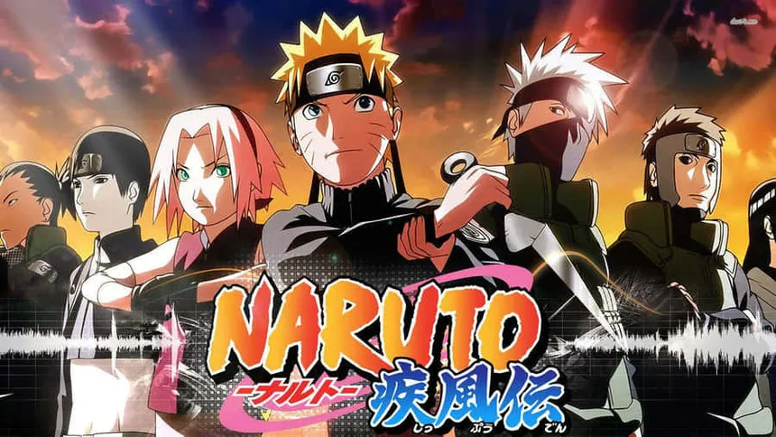
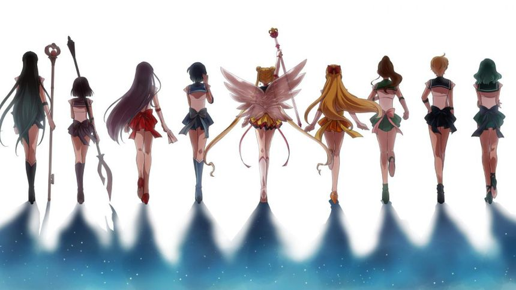
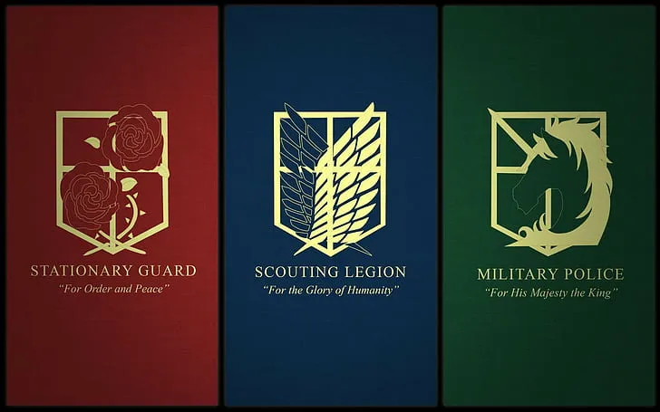
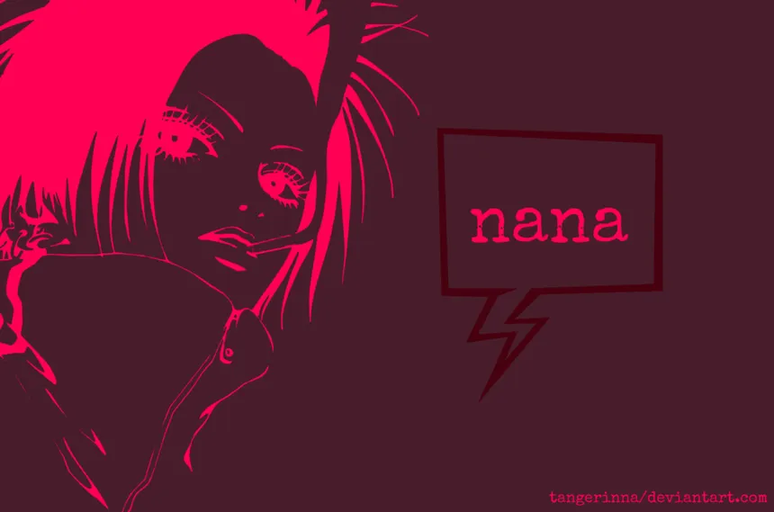
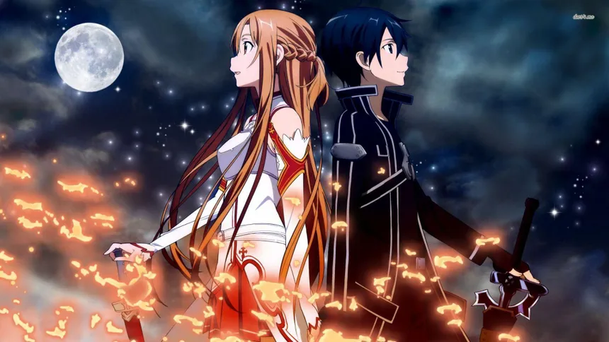
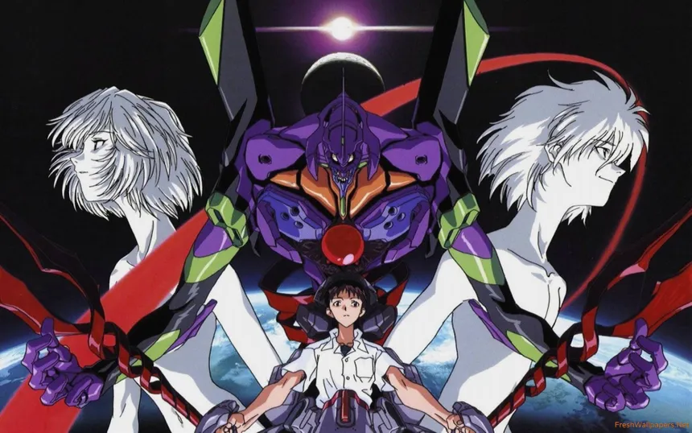
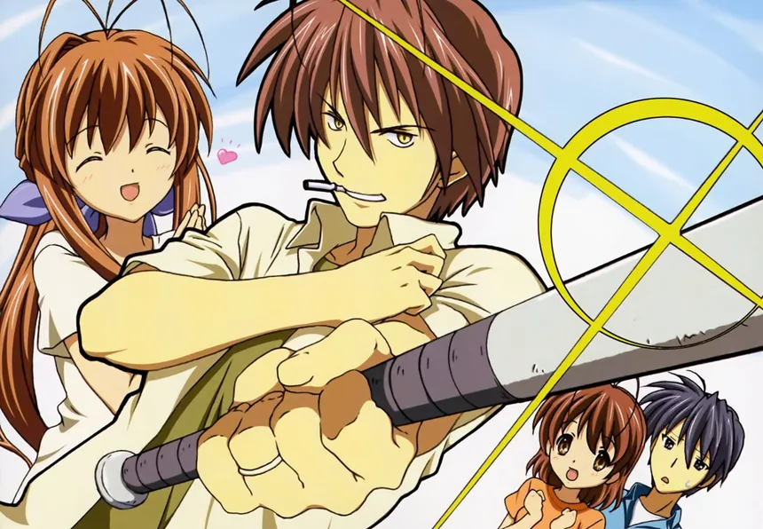
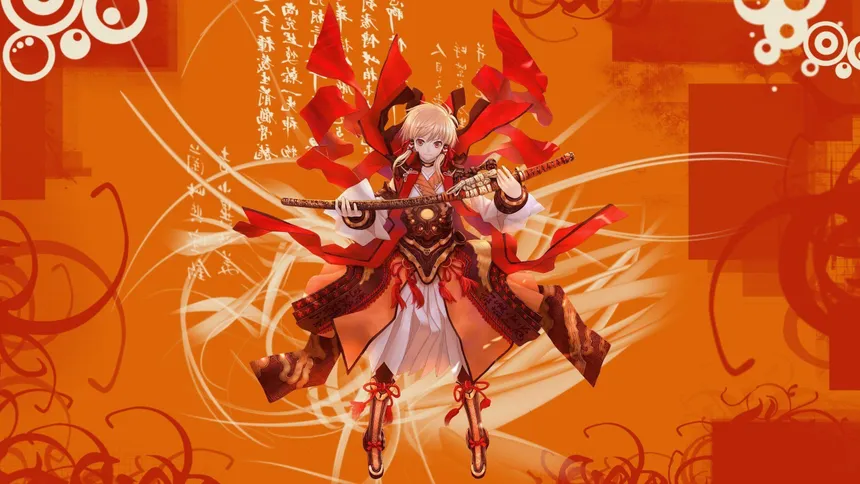
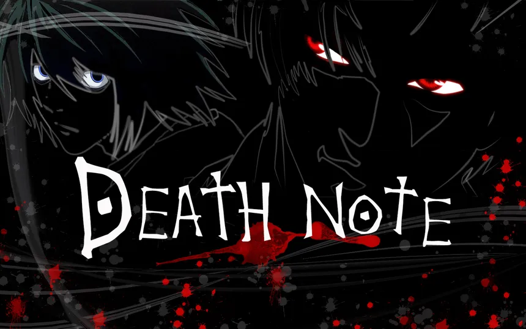
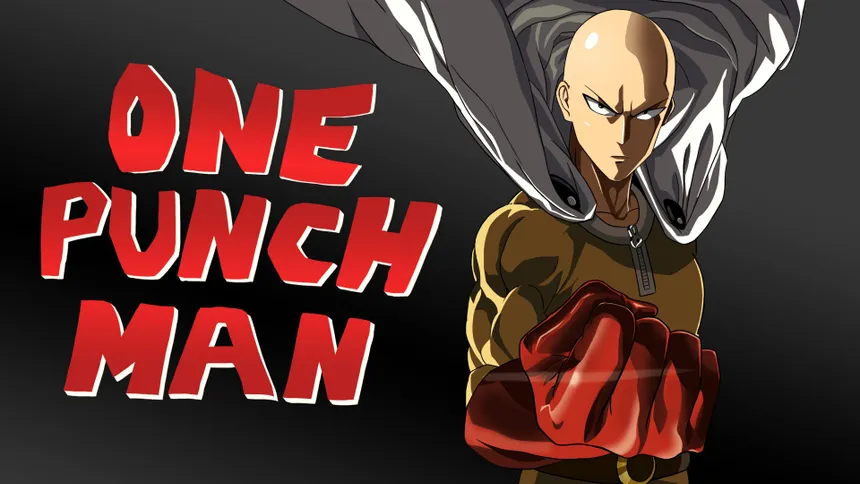

*Shonen:*Anime dirigido Principalmente a un publico masculino joven, con enfasis en la accion y la aventura . Ejemplo:"Naruto".
*Shojo:*Anime dirigido principalmente a un publico femenino joven, con enfoque a las relaciones interpersonales y el romance. Ejemplo: "Sailor Moon".
*Seinen:* Anime orientado a un publico adulto masculino, con temas mas maduros y complejos. Ejemplo: "Attack on Titan".
*Josei:*Anime destinado a un publico adulto femenino, abordando tematicas realistas y emocionales. Ejemplo: "Nana".
*Isekai:* Subgenero donde los personajes son transportados a otro mundo o dimension. Ejemplo: "Sword Art Online".
*Mecha:* Anime centrado en robots gigantes o mechas. Ejemplo: "Neon Genesis Evangelion".
*Slice of life:* Anime que muestra situaciones cotidianas y la vida diaria de los personajes. Ejemplo "Clannad".
*Fantasia:* Anime que involucra elementos fantasticos como magia, criaturas miticas, y mundos imaginarios. Ejemplo: "Fullmetal Alchemist".
*Thriller Psicologico:* Anime que combina elementos de suspenso y exploracion de la mente humana. Ejemplo: "Death Note".
*Comedia:* Anime enfocado en hacer reir al espectador a traves de situaciones humoristicas y personajes divertidos. Ejemplo: "One Punch Man".
